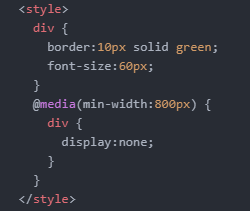

화면의 크기에 따라 웹페이지의 각 요소들이 반응해서 최적솨된 모양으로 바뀌게 하는 것 : 반응형 웹, 반응형 디자인 responsive web
style 태그에서 @media를 적고 소괄호() 안에 웹의 모양이 변하는 기준 크기를 적어준다. 중괄호{} 안에는 크기 조건이 충족되었을 때 어떻게 변할지를 적어주면 된다.

min 최솟값
min-width:800px 은 최소가 800px라는 말이므로, screen width > 800px
max 최댓값
max-width:800px 은 최대가 800px라는 말이므로, screen width < 800px